En el sector del transporte había conductores creando contenido, pero ningún empresario que hablara del oficio desde dentro. Mario Cozma vio esa oportunidad y decidió ocuparla. Desde julio de 2025, en Mediatic nos encargamos de su contenido, y en poco más de un año su marca personal se ha convertido en la más seguida y la más influyente del transporte en España, y su podcast, Rutas de Éxito, en el más escuchado del sector. Entre ambos canales, llega cada semana a cientos de miles de profesionales y aficionados.
En este caso de éxito explicamos quién es Mario, qué estrategia hemos seguido, qué hemos vivido juntos durante este tiempo y qué resultados ha obtenido, tanto en visibilidad como en su negocio.
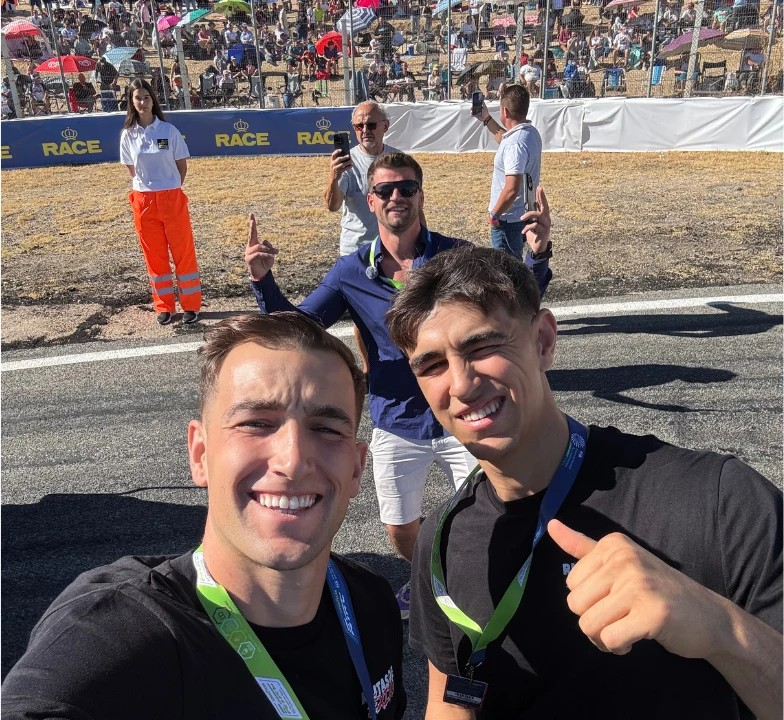
Quién es Mario Cozma
Mario Cozma es el director de Malcolm Trans, una empresa de transporte por carretera especializada en camiones bañera. Su flota, de más de 25 camiones, traslada chatarra a grandes fundiciones en rutas nacionales e internacionales, como Bilbao–Bélgica o Bilbao–Holanda. La empresa tiene su nave en Sant Vicenç de Castellet, con taller propio.
Empezó desde cero y ha hecho crecer el negocio año tras año. Además, ofrece asesorías y consultorías para ayudar a pequeños autónomos a desarrollar su actividad en el sector.
En 2024 decidió dar un paso más y empezar a crear contenido. Como explicó en la entrevista que le hicimos en marzo de 2026, una empresa de transporte tiene un techo: cada camión genera un beneficio concreto, y a partir de ahí no se puede ir más allá. Las redes sociales, en cambio, le ofrecían una palanca para darse a conocer, ganar credibilidad y abrir nuevas oportunidades de negocio.
Cuando Mario empezó a trabajar con Mediatic
En julio de 2025, cuando empezamos a trabajar juntos, Mario ya tenía unos 34.000 seguidores en Instagram. Publicaba vídeos hablados a cámara con regularidad y había trabajado antes con otros dos equipos de contenido, con los que no había encontrado lo que buscaba.
«Los dos equipos con los que he trabajado antes no me daban la tranquilidad ni la confianza, ni ese buen feeling de poder abrirme y enseñar dónde fallo, y que, en vez de reírte, me ayudes a mejorar.»
Mario Cozma
Su objetivo era ambicioso: ganar autoridad digital y convertirse en el referente del transporte en España. Y, a través de esa notoriedad, atraer patrocinios, colaboraciones con marcas y talento para su empresa. Para conseguirlo necesitaba dar un salto en estrategia, en producción y en alcance, pero también un equipo en el que confiar.
Más de un año de kilómetros juntos
Trabajar con Mario ha significado mucho más que sesiones de grabación. Durante este tiempo le hemos acompañado allí donde fuera necesario para generar buen contenido que tuviese impacto.
Uno de los momentos más especiales fue el fin de semana del 4 y 5 de octubre de 2025 en el Circuito de Madrid Jarama-RACE, durante el XXXVIII Gran Premio de España FIA del Campeonato de Europa de Camiones, que coincidió con una prueba del Campeonato de España. Allí compartimos jornada con marcas como Mercedes-Benz o Goodyear, grabamos vídeos para sus redes y realizamos varios episodios del podcast desde el propio circuito.
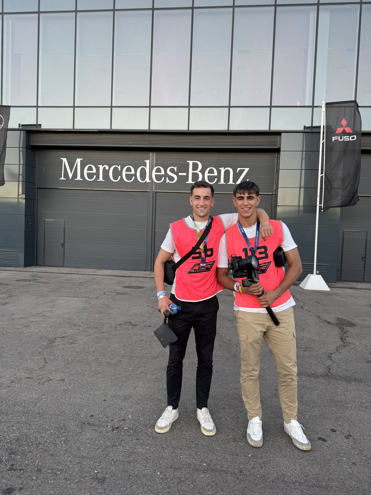
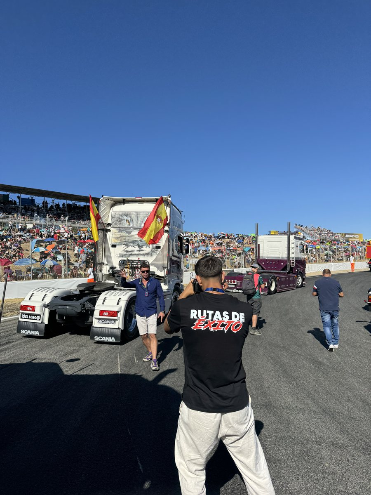
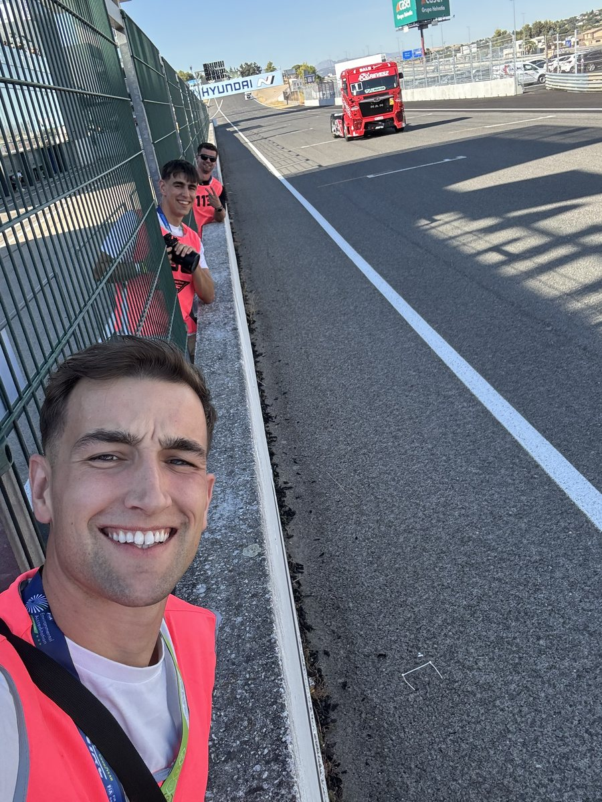
También le hemos acompañado en sus expediciones por Europa. El objetivo de estos viajes era que Mario pudiera preparar una gran comparativa de camiones: compró cuatro unidades de cuatro marcas distintas en cuatro lugares diferentes, un Iveco en Madrid, un Volvo en Bélgica, un Mercedes-Benz en Alemania y un Renault en Lyon. Fuimos con él a buscar cada uno de ellos y documentamos todo el proceso, desde la compra hasta el viaje de vuelta a España, en una serie de vídeos para YouTube.
A esos viajes se suman muchas otras salidas dentro de España, como las grabaciones en Valencia para colaborar con talleres y marcas del sector. Todos estos kilómetros compartidos han construido una relación de confianza que se nota en la forma de trabajar: podemos proponer ideas, probar formatos nuevos y tomar decisiones con agilidad.
La estrategia: dos frentes y dos formatos
Con Mario trabajamos dos frentes: su marca personal y su podcast, Rutas de Éxito. En cada uno combinamos dos formatos:
- Contenido vertical: vídeos cortos y de consumo rápido para Instagram, TikTok y YouTube Shorts. Su función es llegar al máximo número de personas y captar su atención.
- Contenido horizontal: vídeos largos para YouTube. Su función es profundizar, generar conexión y consolidar la autoridad.
Marca personal
En el formato vertical, el contenido de su marca personal combina dos tipos de vídeo:
- Vídeos de viralidad, pensados para llegar a millones de personas. Utilizamos formatos que favorecen la difusión, como rankings, clasificaciones y puntuaciones de temas del sector. Su vídeo clasificando profesiones, por ejemplo, se convirtió en el más visto de su perfil.
- Vídeos de valor, con información útil que nutre a la audiencia y refuerza la autoridad de Mario. Uno de ellos, en el que puntuaba distintos trabajos para camioneros, rozó el medio millón de visualizaciones.
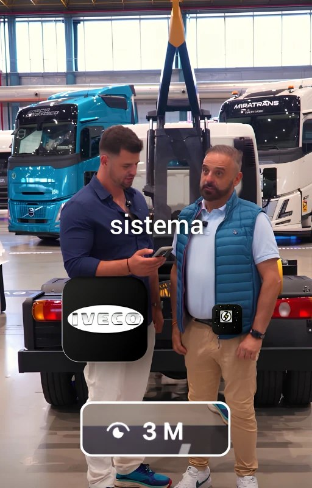
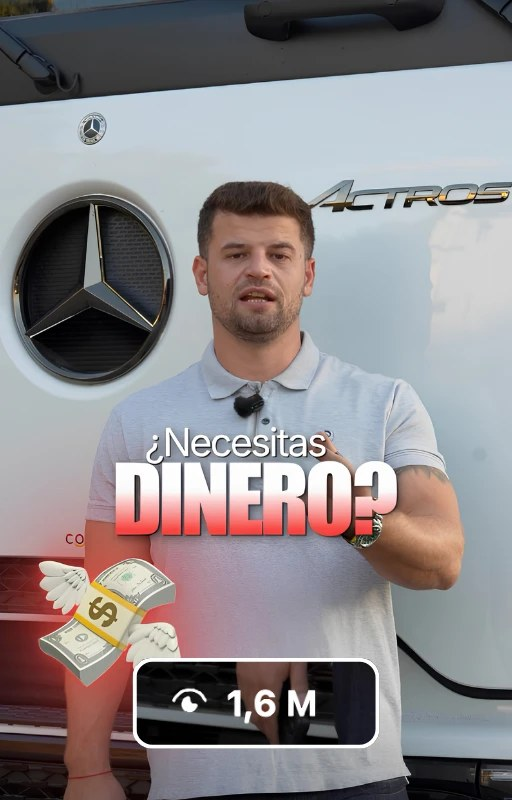
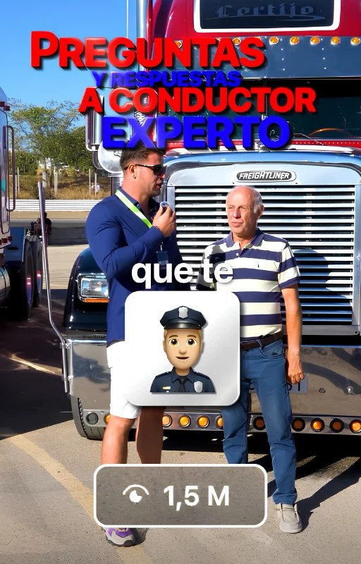
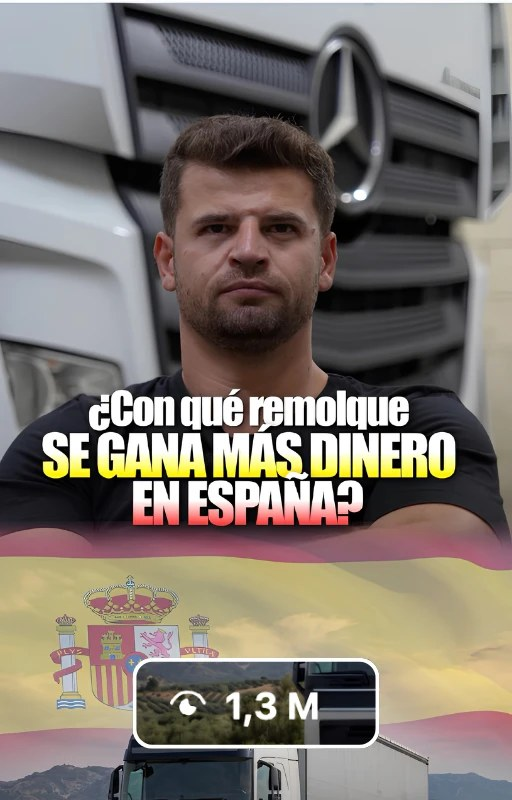
Para conseguir estos resultados no basta con coger un vídeo que ha funcionado y repetirlo hasta que se queme, porque eso satura a la audiencia: acabas construyendo una comunidad que ya ha visto lo mismo demasiadas veces. Lo que hacemos es probar distintos ángulos a partir de una misma idea, o de ideas diferentes que puedan funcionar, para que cada vídeo aporte algo nuevo. Por eso los vídeos que ves arriba tocan temas distintos, y por eso la cuenta sigue creciendo mes a mes.
En el formato horizontal, trabajamos vídeos largos para su canal de YouTube. Los reels sirven para captar a mucha gente nueva, y a esa gente después hay que cuidarla y educarla. En Instagram se hace sobre todo con las historias, pero la mejor forma de nutrir a una audiencia es el contenido de YouTube.
No es lo mismo que alguien te dedique 30 segundos que media hora. Para consumir media hora de tu contenido en reels, una persona tendría que ver 30 reels de un minuto o 60 de 30 segundos, y eso es mucho más difícil que ver un único vídeo de YouTube bien explicado. Además, en YouTube la gente suele llegar por intención de búsqueda: ya sabe lo que busca y lo consume con mucha más conciencia.
Estos vídeos permiten a Mario ampliar los temas que plantea en los reels, responder dudas y mostrar la realidad del sector, como en la serie de la comparativa de camiones. Además, dan margen para que los reels sean más directos y generen más debate, porque en el vídeo largo hay espacio para explicarse.
Rutas de Éxito
Rutas de Éxito ya existía cuando empezamos a trabajar con Mario. Nuestro reto fue llevarlo a otro nivel, con una producción más profesional y un alcance mucho mayor.
Cada semana se publica un episodio, los jueves a las 20:00, en el que Mario entrevista a un perfil del sector: chóferes, mecánicos, empresarios o cualquier persona que pueda aportar algo al mundo del transporte. En YouTube, lo que más pesa para que un vídeo capte la atención es el título y la miniatura. Lo que va dentro también importa, pero una conversación no se puede guionizar: en una entrevista como esta, el peso recae en elegir bien al invitado. Por eso pusimos el foco en el empaquetado: títulos y miniaturas pensados para que más personas descubran cada episodio.
De cada episodio salen tres vídeos verticales, que se publican los martes, jueves y domingos. Así, el podcast alimenta también el crecimiento en Instagram y TikTok.
Puntos fuertes de trabajar con Mediatic
Lo primero que notó Mario al trabajar con nosotros fue el cambio de imagen. La mayoría de creadores del sector eran conductores con buen contenido, pero producido con pocos recursos. Como empresario, Mario necesitaba una imagen que reflejara su posición, y por eso cuidamos al detalle la calidad de la grabación y de la edición.
Lo segundo fue el tiempo. En Mediatic nos encargamos de todo el proceso: estrategia, ideas, guiones, grabación, edición y publicación. Para los reels, basta con una grabación mensual de entre 4 y 5 horas para cubrir el contenido de todo el mes, y las grabaciones de YouTube y del podcast se organizan aparte. Así, Mario puede seguir dedicando su tiempo a dirigir sus empresas.
Y lo tercero fueron los resultados, que llegaron desde los primeros meses, sin tener que esperar medio año para ver el impacto.
Los resultados
Cada proyecto pide un ritmo de crecimiento distinto. Hay casos, como el de Manuel Costiña, en los que el objetivo es crecer muy rápido en seguidores. En el de Mario el objetivo era otro: construir una notoriedad de marca sólida, y para eso apostamos por un crecimiento más progresivo.
Hemos sumado más de 40.000 seguidores de una forma más calmada, para poder atender toda esa demanda y evitar que cayeran las visitas en historias, o el impacto y la notoriedad de su perfil y de su marca.
Su marca personal ha pasado de 34.000 a 77.700 seguidores en unos diez meses y acumula más de 10 vídeos por encima del millón de visualizaciones, con algunos de 2,5, 2 y 1,7 millones.
Rutas de Éxito
La parte más difícil de un podcast es sacar de él los fragmentos correctos: hay que ver el episodio completo, ir pausando y combinando ideas hasta dar con los clips de un minuto que más interés pueden generar, y quedarnos únicamente con los tres mejores. Estos son algunos de los cortes que mejores resultados han conseguido.
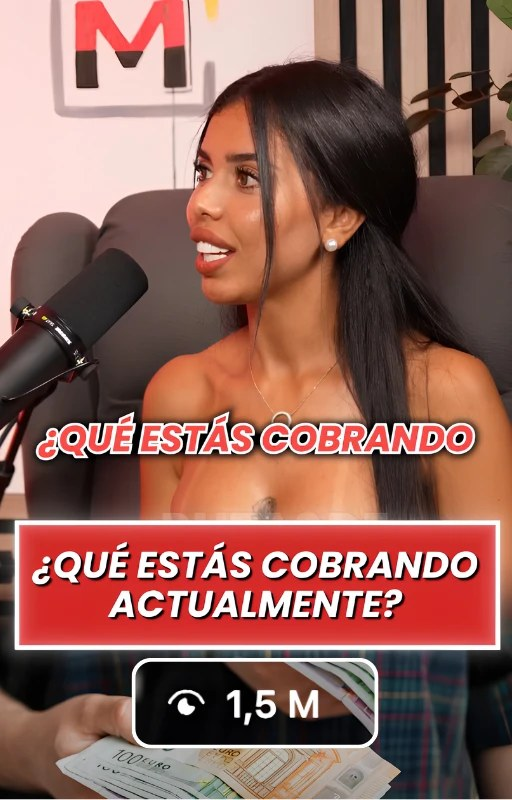
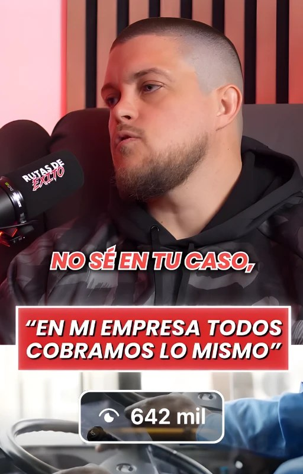
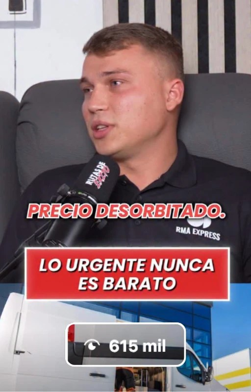
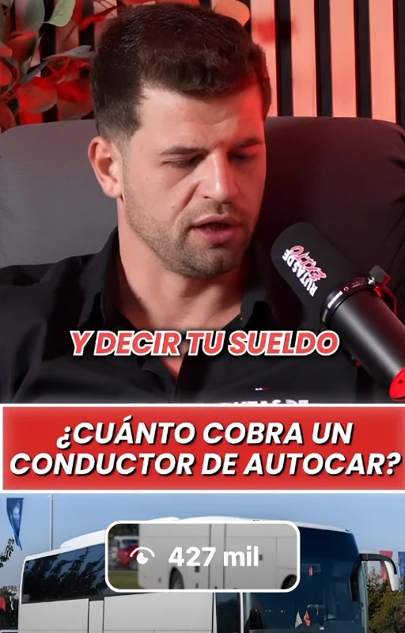
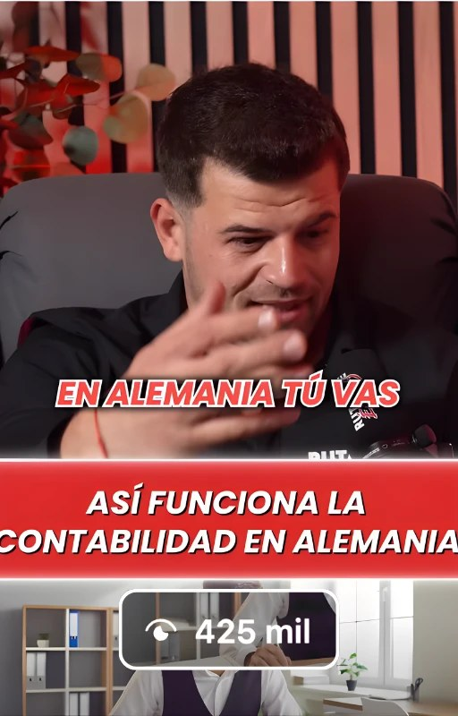
YouTube
YouTube es una plataforma mucho más difícil de hacer crecer que Instagram o TikTok: no basta con captar la atención unos segundos, hay que conseguir que la gente se quede durante muchos minutos. Varios de estos vídeos duran cerca de una hora y, aun así, la serie de la comparativa de camiones, con los viajes a Madrid, Bélgica, Alemania y Lyon, tiene entre 73.000 y 144.000 visualizaciones por vídeo. En total, el canal ha pasado de 12.000 a 25.400 suscriptores.
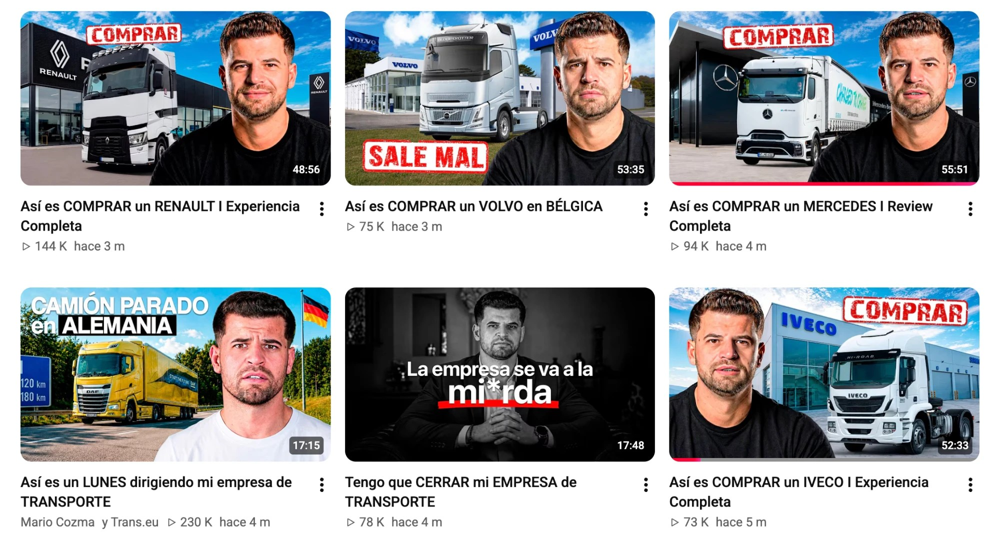
La importancia de los resultados: beneficios para Mario
Las visualizaciones son solo el principio. Lo relevante es lo que esa visibilidad ha supuesto para su negocio:
- Colaboraciones con grandes marcas. Mario ha grabado episodios del podcast con marcas del sector como Goodyear, Granalú y Eurowag, entre otras.
- Patrocinios y descuentos. Su visibilidad le ha abierto acuerdos con empresas del sector y descuentos de miles de euros en camiones, neumáticos y remolques.
- Marcas que quieren aparecer en su canal. Cada vez más empresas acuden a Mario para promocionarse en su contenido.
- Más ventas de asesorías y consultorías. Más gente interesada en asesorías y consultorías 1 a 1 con él.
- Captación de talento. Gracias a las redes sociales, Mario recibe muchos más currículums para su empresa y cuenta con un proceso de selección más amplio.
- Crecimiento empresarial. Gracias al contenido, Mario ha podido integrar en su grupo a otras empresas y autónomos del sector.
La opinión de Mario sobre trabajar con nosotros
Cuando le preguntamos qué es lo que más valora de trabajar con Mediatic, Mario lo tuvo claro:
«Lo más importante para mí, y es lo que os dije desde el primer día, es la confianza, la transparencia, el poder confiar y el poderme ir a dormir tranquilo.»
Mario Cozma
También destacó la capacidad del equipo para adaptarse a su ritmo, algo esencial para un empresario con una agenda tan exigente como la suya. Puedes ver la entrevista completa a continuación:
 ▶
▶Entrevista a Mario Cozma sobre su experiencia trabajando con Mediatic. Fuente: YouTube (canal de la agencia).
Conclusión
Lo que ha marcado la diferencia en el caso de Mario no depende de un vídeo concreto, sino de la constancia: una estrategia clara, una producción cuidada y un equipo que le acompaña allí donde hace falta para generar contenido con impacto. Así ha pasado de 34.000 a 77.700 seguidores en Instagram, ha duplicado su canal de YouTube y ha abierto puertas que antes no estaban a su alcance, como colaboraciones con marcas, patrocinios y un acceso mucho más amplio a talento para su empresa.
Si quieres ver otro ejemplo en un nicho muy distinto, te recomendamos el caso de éxito de De Profundis.
Y si estás pensando en dar el paso con tu marca, cuéntanos tu proyecto y vemos juntos por dónde empezar.
Preguntas frecuentes
¿Quién es Mario Cozma?
Mario Cozma es un empresario del sector del transporte, director de Malcolm Trans, una empresa de camiones bañera con más de 25 vehículos y sede en Sant Vicenç de Castellet. Es también creador de contenido y presentador de Rutas de Éxito, un podcast sobre el mundo del transporte.
¿Cuánto ha crecido Mario Cozma en redes sociales con Mediatic?
Desde julio de 2025, Mario ha pasado de 34.000 a 77.700 seguidores en Instagram y de 12.000 a 25.400 suscriptores en YouTube. Además, acumula más de 10 vídeos por encima del millón de visualizaciones, todos ellos con alcance orgánico.
¿Cuánto tiempo dedica Mario a crear su contenido?
Para los reels, una grabación al mes de entre 4 y 5 horas, en la que se prepara el contenido de todo el mes. Mediatic se encarga de la estrategia, las ideas, los guiones, la grabación, la edición y la publicación. El podcast y YouTube se graban por separado.
¿Puede una empresa de transporte conseguir clientes y oportunidades con las redes sociales?
Sí. En el caso de Mario Cozma, las redes le han aportado colaboraciones con marcas, patrocinios, descuentos en camiones y neumáticos, más currículums para su empresa y más ventas de asesorías. El contenido permite mostrar cómo trabaja una empresa y generar confianza en clientes, proveedores y profesionales.